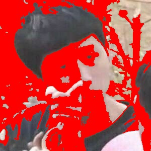
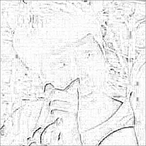

如何优雅地用Magick做表情包
黄文韬 统计1602班 1303160224 基于Reveal.js编译
表情包之道
表者表现之谓也，情者情感之谓也，包者包罗万象之谓也。表情包者表现情感包罗万象之物也。自混沌初开，人类伊始，图像便是传递信息最直观的工具，从山顶洞人的原始壁画，到现代人的工业蓝图，无不是以图像作为信息的载体。而表情包，便是自互联网诞生以来，人类智慧之结晶。
昔者，仓颉作书，天雨粟鬼夜哭；今者，网民作包，老子的爱收好。
想必大家都有自己的表情包库，但一直在网上偷图并不是长远之计。毛主席说，自己动手，丰衣足食。身为统计人，我们如何用最熟悉的R语言来做表情包呢？别慌，今天给老哥们介绍个好东西——
“Magick”
表情包之术
“Magick”是专门为R语言设计的图像处理包，可以提供在R里的图像处理，修图分析且不在话下，更何况区区表情包？
我们来安装一下：
install.packages("magick")先介绍一下今天的特别来宾
有东北玉面小飞龙之称的——
王境泽同学
读取本地表情包
在Magick中，我们既可以在本地读取表情包：
library(magick)
wjz <- image_read("Pictures/wjz.jpg")读取网上表情包
Magick也可以在网上读取表情包：
library(magick)
wjz.net <- image_read("http://imgsrc.baidu.com/forum/
pic/item/9822720e0cf3d7cab9fd7ef0fe1fbe096b63a929.jpg")转换格式
我们还可以把表情包格式从jpg转换为png，方便你抠图什么的
library(magick)
wjz.png <- image_convert(wjz, "png")
image_info(wjz.png)
wjz.png查看表情包信息
光外表是不够的，我们需要了解表情包的内在
library(magick)## Linking to ImageMagick 6.9.9.39
## Enabled features: cairo, fontconfig, freetype, lcms, pango, rsvg, webp
## Disabled features: fftw, ghostscript, x11wjz <- image_read("Pictures/wjz.jpg")
image_info(wjz)## format width height colorspace matte filesize density
## 1 JPEG 300 300 sRGB FALSE 19761 72x72裁剪
library(magick)
wjz.crop<-image_crop(wjz,"200x250+30")犹抱琵琶王境泽
按宽比例进行放大缩小
library(magick)
wjz.width<-image_scale(wjz,"100");wjz.widthmini王境泽
按高比例进行放大缩小
library(magick)
wjz.length<-image_scale(wjz,"x400");wjz.lengthXXL王境泽
旋转
library(magick)
image_rotate(wjz,45)360度王境泽
左右翻转
library(magick)
image_flop(wjz)镜像世界王境泽
上下翻转
library(magick)
image_flip(wjz)天地勿用王境泽
色调调整
library(magick)
image_modulate(wjz, brightness = 80, saturation = 120, hue = 90)黯然神伤王境泽
特定部位上色
library(magick)
image_fill(wjz, "red", point = "+150+150", fuzz = 15)血色杀手王境泽

模糊
library(magick)
image_blur(wjz,5,5)高度近视王境泽
增加噪点
library(magick)
image_noise(wjz)信号干扰王境泽
提取轮廓
library(magick)
image_charcoal(wjz)素描石膏王境泽

油画处理
library(magick)
image_oilpaint(wjz)王·蒙娜丽莎·境泽
色彩反转
library(magick)
image_negate(wjz)相机底片王境泽
简单文字注释
library(magick)
image_annotate(wjz, "?????",
size=25, gravity = "north", color="white")自定义文字注释
library(magick)
image_annotate(wjz, "forgive", size=30, color="white",
boxcolor = "green", degrees = -10, location = "+170+130")让表情包动起来
newlogo <- image_scale(image_negate(wjz), "x300")
oldlogo <- image_scale(wjz, "x300")
frames <- image_morph(c(oldlogo, newlogo), frames = 10)
image_animate(frames)说翻脸就翻脸的王境泽
建立图层
在Magick里你还可以像在PS中一样对不同的图层进行操作哦
wjz <- image_read("wjz.jpg")
heart <- image_read("heart.png")
img <- image_scale(c(wjz,heart), "300x300")

|

|
跟我一起念
I have a jingze，I have a heart
你的初恋王境泽
image_flatten(img)我们试着缩小这个桃心
wjz <- image_scale(image_read("wjz.jpg"),"300x300")
heart <- image_scale(image_read("heart.png"),"200x200")
img <- c(wjz,heart)
image_flatten(img)感觉没到位，再小一点
wjz <- image_scale(image_read("wjz.jpg"),"300x300")
heart <- image_scale(image_read("heart.png"),"50x50")
img <- c(wjz,heart)
image_flatten(img)这就是我要的恋爱的感觉
最后配上文字
wjz <- image_scale(image_read("wjz.jpg"),"300x300")
heart <- image_scale(image_read("heart.png"),"50x50")
img <- c(wjz,heart)
wjz.heart<-image_flatten(img)
image_annotate(wjz.heart, "心动警告",
size=25, gravity = "north", color="white")心动了吗？
Magick
心动了还愣着干嘛？
赶快使用Magick制作你的专属表情包吧！
install.packages("magick")欲知更多功能，请参见官方文档